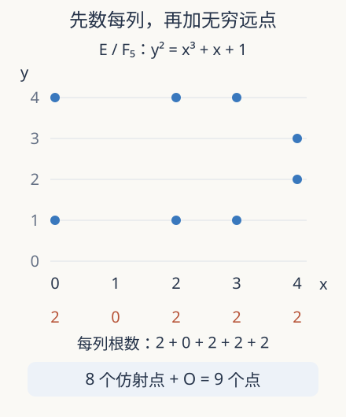

本页目录
数论桥梁 01 · 椭圆曲线：先把有限域上的点数清楚
同一个整数方程，模不同素数时为什么会有不同数目的解？本路线先做可核对的计数，再走向群、模形式和 Galois 表示。只需同余、二次方程和函数；域的背景见域与 Galois 理论，群见高等群论。本讲使用经典理论，研究资料核查至 2026-09-08。
1. 用小世界检查一个无限问题
我们想找方程 \(y^2=x^3+x+1\) 的有理数解。直接遍历分子分母永远不会结束；先把整数系数模素数 \(p\)，却会得到只有 \(p^2\) 对候选的有限问题。模 \(p\) 的解并不自动提升成有理数解，但它们形成一种能比较、能计算的局部数据。后面会看到，许多素数处的计数能成为一条解析函数的系数。
\(\mathbb F_p\) 是余数 \(0,1,\ldots,p-1\) 构成的域，加减乘都取余，除以非零数是乘逆元。例如模 5 时 \(2^{-1}=3\)，因为 \(2\cdot3\equiv1\)。我们限制 \(p>3\)，把曲线写成短 Weierstrass 形式
最后的非零条件不可省略。令 \(F=y^2-x^3-ax-b\)，仿射奇点必须同时满足 \(F=0\)、\(2y=0\)、\(3x^2+a=0\)。消去 \(x,y\) 后对应 \(4a^3+27b^2=0\)。因此这条代数条件是在排除尖点或交叉等退化，不是对计数程序的装饰。特征 2、3 时应换一般方程，不能照搬此判据。
2. 为什么还需要一个看不见的点
椭圆曲线不是只有屏幕上可画的 \((x,y)\)。齐次化得到
当 \(Z\ne0\)，除以 \(Z^3\) 就回到原方程；当 \(Z=0\)，必须 \(X=0\)，留下唯一的射影点 \(O=[0:1:0]\)。射影坐标按共同的非零倍数视为同一点，所以这里不是有许多个 \(Y\) 可选。这个点将成为下一讲群运算的零元，本讲计数必须先给它留一个位置。

3. 九个点怎样手算出来
模 5 的平方表是 \(0^2=0\)、\(1^2=4^2=1\)、\(2^2=3^2=4\)。将 \(x=0,1,2,3,4\) 依次代入 \(x^3+x+1\)，得到 \(1,3,1,1,4\)。因此对应的 \(y\) 解数是 \(2,0,2,2,2\)，仿射点共 8 个，加 \(O\) 得 9 个。此处判别式条件为 \(4+27\equiv1\pmod5\)，曲线确实非奇异。
为了不为每个 \(x\) 重写一张平方表，定义二次特征 \(\chi(u)\)：非零平方取 1，非平方取 \(-1\)，零取 0。方程 \(y^2=u\) 的解数恰好是 \(1+\chi(u)\)。这个公式在 \(u=0\) 处给一个根，解决了“每个平方都有两个根”的常见漏项。把各列相加：
定义 \(a_p=p+1-\#E(\mathbb F_p)\)。它测量点数相对 \(p+1\) 的偏差，不是系数 \(a\)；两者名字接近但对象不同。本例 \(a_5=-3\)。负号意味着比基准更多点，不能凭名称把它误读成“缺失了三个点”。
4. 一个小和式，背后有全局结构
直接逐项估计只能得到 \(|a_p|\le p\)。Hasse 定理给出更强的 \(|a_p|\le2\sqrt p\)，但这不是随机正负号相消的口头论证，而是光滑椭圆曲线的定理。第四讲会用 Frobenius 的两个特征根说明这个平方根量级从何而来。本例 \(3\le2\sqrt5\)，所以通过了必要的一致性检查；满足不等式本身却不能证明曲线光滑。
计算也有不同层次。双循环穷举要检查 \(p^2\) 对；先做平方根表只需约 \(p\) 次操作。面对数百位的素数，这两种方法仍太慢。Schoof 思路改为在许多小素数 \(\ell\) 处求 \(a_p\bmod\ell\)，再用中国剩余定理重建。当模数乘积大于 Hasse 区间的长度 \(4\sqrt p\)，区间内至多有一个符合所有余数的整数。几何界因此直接变成算法的停止标准。
这里省略的难点是怎样不枚举全部点就取得小模数余数；它需要扭点、除法多项式和 Frobenius 作用。一个理论界能够降低计算量，但不会免费提供这些余数。后续研究的改进常落在这一步，以及同源、模多项式和计算证书的组织方式上。
5. 实验：把“两个根”当成待检验预测
先预测哪些参数会产生一个根的列，再揭示图像。改变素数编号、\(a\)、\(b\)，检查每列的根数、总点数与非奇异性。然后设置 \(a=b=0\)：程序仍能合法计数 \(y^2=x^3\)，但会明确撤下椭圆曲线假设。
交互后备：取素数编号 0，即 \(p=5\)，\(a=b=1\)。逐列根数为 \(2,0,2,2,2\)；试着只用平方表重建。
默认值静态结果：仿射点数 8，总数 9，\(a_5=-3\)，Hasse 半宽 \(2\sqrt5\approx4.47214\)。曲线非奇异。图像用离散坐标，每列零根也有数学意义。
把理论界变成可以验收的证书
对本例，Hasse 界把整数迹限制在 \(-4,-3,\ldots,4\)。假设另一个算法只告诉我们 \(a_5\equiv0\pmod3\) 和 \(a_5\equiv2\pmod5\)，那么合并后的条件是 \(a_5\equiv12\pmod{15}\)；在这个区间内唯一可能是 \(-3\)。重建步骤没有重新数点，它利用“余数信息加一个可靠界”恢复了整数。真正的证书必须同时说明这两个余数怎样取得，不能只展示最后吻合的答案。
再试一个容易蒙混过关的反例：模 5 的 \(y^2=x^3\) 在五列的根数为 \(1,2,0,0,2\)，加上射影点后共 6 个，形式上的偏差为零，也落在 Hasse 窗口中。但原点是奇点，光滑性检查明确失败。这说明验收条件有方向：光滑椭圆曲线必满足该界，满足该界却不反推光滑。算法输出正确的一个数，也不意味着它给对象贴的标签正确。
实际整理素数表时，还应保留方程的整数模型、模数和是否好约化，避免把参数变化与素数变化混在一起。若只把多个计数接成曲线，看见平滑或波动都没有自动的统计意义：横轴是离散素数，观测之间有共同的算术来源。第四讲将用共同的 Frobenius 描述解释这种联系，而不是把每个计数当成独立随机数。
6. 迁移题：计数结论究竟能走多远
题一。 对非零非平方 \(d\)，比较 \(y^2=f(x)\) 与 \(dy^2=f(x)\) 的点数，假设两条射影曲线光滑。
独立作答后核对
第二条逐列根数是 \(1+\chi(f(x)/d)=1-\chi(f(x))\)，零值也成立。两条总点数相加为 \(2p+2\)，迹互为相反数。这是二次扭曲的计数影子，不表示两个点集有逐点相同的坐标。
题二。 已知模某个素数的一个仿射点，能否宣布找到了原方程的有理点？反过来，有理点何时可约化？
独立作答后核对
不能；有限同余只给局部条件。有理点的坐标若分母不被 \(p\) 整除，就可把分母换成模 \(p\) 逆元，得到仿射解。一般要用适当整模型的射影约化处理无穷远和坏约化，不能把一次模运算当成局部到整体原理。
速查与继续阅读
| 对象 | 公式 | 条件 |
|---|---|---|
| 总点数 | \(1+\sum_x(1+\chi(x^3+ax+b))\) | \(p>3\)，含 \(O\) |
| 迹 | \(a_p=p+1-\#E(\mathbb F_p)\) | 不是方程系数 \(a\) |
| Hasse 窗口 | \(\lvert a_p\rvert\le2\sqrt p\) | 光滑椭圆曲线 |
下一讲：从割线到有限群。一手作者资料均实际核查，访问 2026-09-08：Sutherland，MIT 2023 课程，第 7–8 讲；Milne，《Elliptic Curves》第二版，2020；Milne，模形式讲义，2017-03-22 版，第 11 节的曲线与 zeta 函数。这些是经典理论与计算路线，不是 2026 新定理。